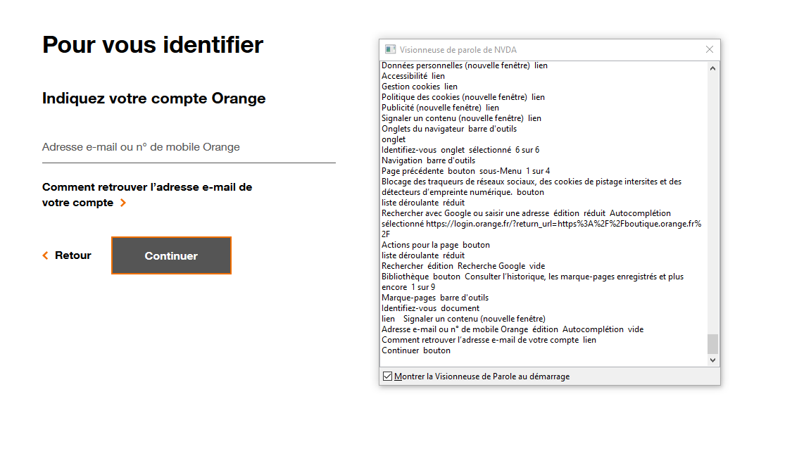
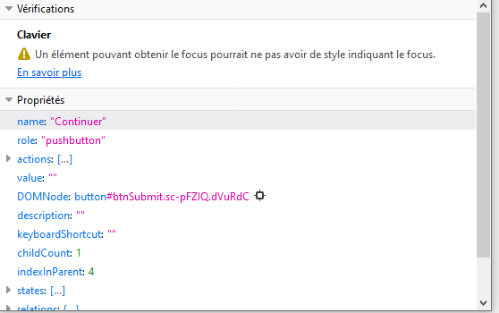
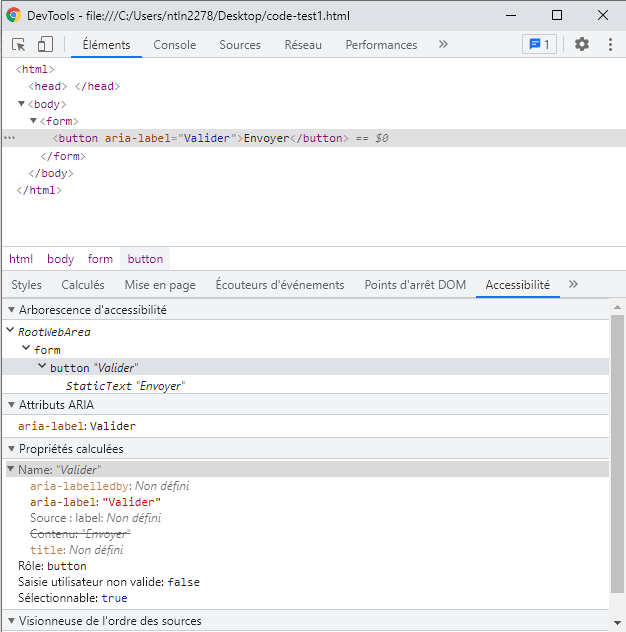

Comment tester le WCAG 2.5.3 ?
Thématiques associées :- Web
- Intermédiaire
Date de parution
Mise à jour de l'article du
Objectif du critère #
Le critère WCAG 2.5.3 – Label in Name vise à garantir que lorsqu’un élément interactif (bouton, lien, champ, etc.) affiche du texte visible à l’écran, ce texte soit également présent dans son nom accessible.
Cela permet aux utilisateurs d'aides techniques (en particulier de logiciels de reconnaissance vocale) de comprendre et d’interagir correctement avec l’interface.
En effet, ces outils s’appuient sur le nom accessible pour identifier et activer les éléments.
Le texte visible n’a pas besoin d’être strictement identique au nom accessible, mais il doit au minimum être inclus dans celui-ci — idéalement au début.
Exemple concret #
Exemple problématique #
Prenons l'exemple d'un utilisateur naviguant à l'aide d'un logiciel de reconnaissance vocale souhaitant saisir et soumettre un formulaire.
<button>
<img src="envoyer.png" alt="Soumettre">
</button>
Dans cet exemple, le bouton affiche visuellement le mot « Envoyer » (dans l’image), mais le texte alternatif est « Soumettre ».
Le nom accessible du bouton devient donc Soumettre.
Résultat : un utilisateur de reconnaissance vocale qui dit « Cliquer sur Envoyer » ne pourra pas activer le bouton, car l’assistant ne reconnaîtra pas ce nom.
Exemple conforme #
<button>
<img src="envoyer.png" alt="Envoyer">
</button>
Le nom accessible contient désormais le mot « Envoyer », identique au texte affiché.
Le critère WCAG 2.5.3 est donc respecté.
Attention au masquage accessible #
Les contenus masqués ne doivent pas être insérés dans le nom visible (mais plutôt à la fin), sinon le critère sera non-conforme et l'élément ne sera pas utilisable avec une dictée vocale.
Exemple d’erreur #
<a href="www.orange.com" target="_blank"> Ouvrir <span class="visually-hidden">dans une nouvelle fenêtre </span> le site d'orange </a>
Le nom accessible devient :
« Ouvrir dans une nouvelle fenêtre le site d’Orange »
Mais l’utilisateur voit seulement :
« Ouvrir le site d’Orange »
En reconnaissance vocale, dire « Ouvrir le site d’Orange » ne fonctionnera pas, car ce texte ne correspond pas au nom accessible réel.
Comment tester la conformité #
1. Avec un lecteur d’écran #
Le lecteur d’écran vocalise :
- la fonction de l’élément (bouton, lien, texte, etc.),
- son statut,
- et son nom accessible.
Procédure :
- Naviguez sur la page avec un lecteur d’écran.
- Écoutez le nom lu pour chaque bouton ou lien.
- Si ce nom ne correspond pas au texte visible, le critère n’est pas conforme.
Certains lecteurs proposent une visionneuse de paroles permettant d’afficher le nom accessible sous forme textuelle, ce qui facilite la comparaison avec le texte affiché.

2. Avec les outils de développement #
Le moyen de vérifier le critère avec l'inspecteur de commande dépend du navigateur utilisé.
Sous Firefox #
- Ouvrir l’inspecteur de commande :
Ctrl + Maj + I - Sélectionner l’onglet Accessibilité
- Inspecter l’élément à vérifier
- Dans la section Propriétés, vérifier que l’attribut name contient au moins le texte visible à l’écran

Sous Chrome ou Edge Chromium #
- Ouvrir l’inspecteur de commande :
Ctrl + Maj + I - Sélectionner l’onglet Éléments
- Choisir l’élément à inspecter
- Cliquer sur l’onglet Accessibilité (il peut être caché derrière « Plus d’onglets »)
- Dans la section Propriétés calculées, vérifier que l’attribut name contient au moins le texte affiché

En résumé #
Pour respecter le critère WCAG 2.5.3, assurez-vous que :
- Le texte visible d’un élément est inclus dans son nom accessible, si possible au début.
- Les contenus masqués n’altèrent pas la correspondance entre texte visible et nom accessible.
- Les tests peuvent être réalisés avec un lecteur d’écran et/ou un inspecteur d’accessibilité.
Ressources associées :